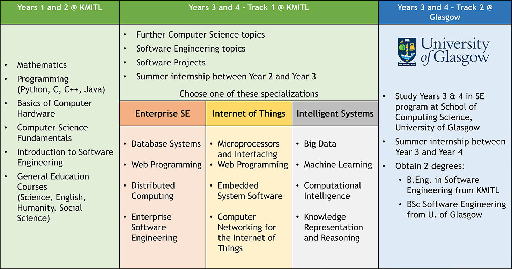

B.Eng. in Software Engineering
The B.Eng. in Software Engineering Program is a 4-year undergraduate program aiming at producing graduates who are capable of working confidently in the international software industry as well as pursuing postgraduate study and research in leading universities worldwide. The curriculum of the program is designed in accordance with the recent ACM/IEEE guideline for undergraduate curriculum in software engineering.
Curriculum Overview - Study Plans

Year 1 and Year 2
In the first two years, the students will study basic courses in mathematics, computer science, and software engineering and develop their programming skills using various programming languages (including Python, C, C++, Java, etc.). Also, the students will be trained to communicate correctly and effectively. At the end of Year 2, every student is required to undertake an internship in a software company for 8 - 10 weeks. All the courses in the first two years will be held at the International College in the Bangkok Campus of KMITL.
Year 3 and Year 4 (KMITL)
In Year 3 and Year 4, the students will learn advanced topics in software engineering and important software development methodologies that are used in practice. The students will have opportunities to the apply the knowledge and skills they have acquired to conduct a team software project in Year 3 and a one-year research project in Year 4. Students entering Year 3 are required to take one of the following specializations:
- Metaverse Software Engineering - Specializing inlarge and complex software for enterprises and digital transformation.
- Industrial Internet of Things - Specializing in the Internet of Things, including embedded and mobile systems.
- Artificial Intelligence - Specializing in applications of artificial intelligence and data science, including machine learning and Big Data. The study plans for these three specializations differ in some required courses. Also the students are recommended to toe work on their senior projects that utilize the knowledge of their respective specializations.
Year 3 and Year 4 (KMITL-Glasgow Double-Degree Program)
The students joining the KMITL-Glasgow Double-DegreeProgram will take courses in Years 3 and 4 in the Software Engineering program at the Schoolof Computing Science, University of Glasgow.